Transform echipele non-tehnice în AI Business Translators
Acestea capătă AI agency: discernământ + capacitate de acțiune. Devin oamenii care înțeleg problemele de business, știu să le rezolve cu ajutorul AI și construiesc sisteme care rămân în organizație.
Ai primit mandatul să te ocupi de AI. De unde începi?
Descarcă ghidul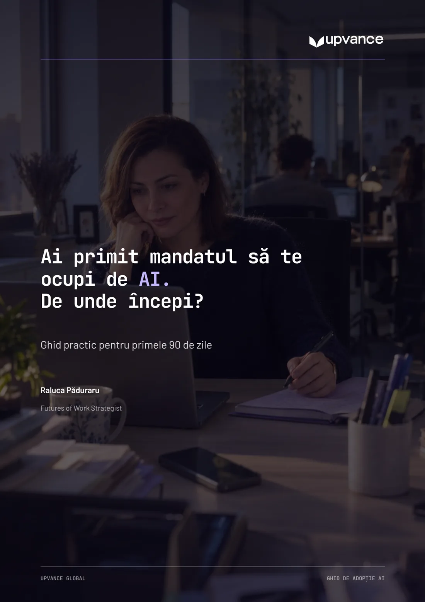
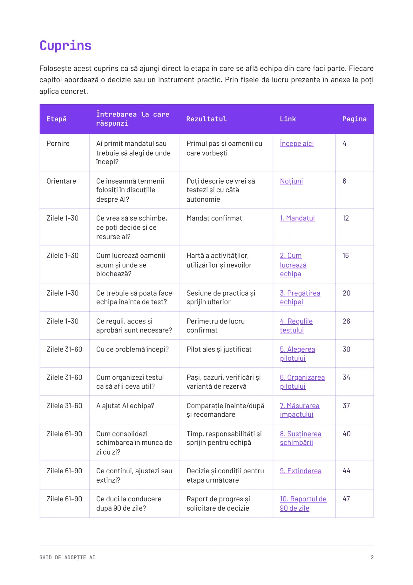
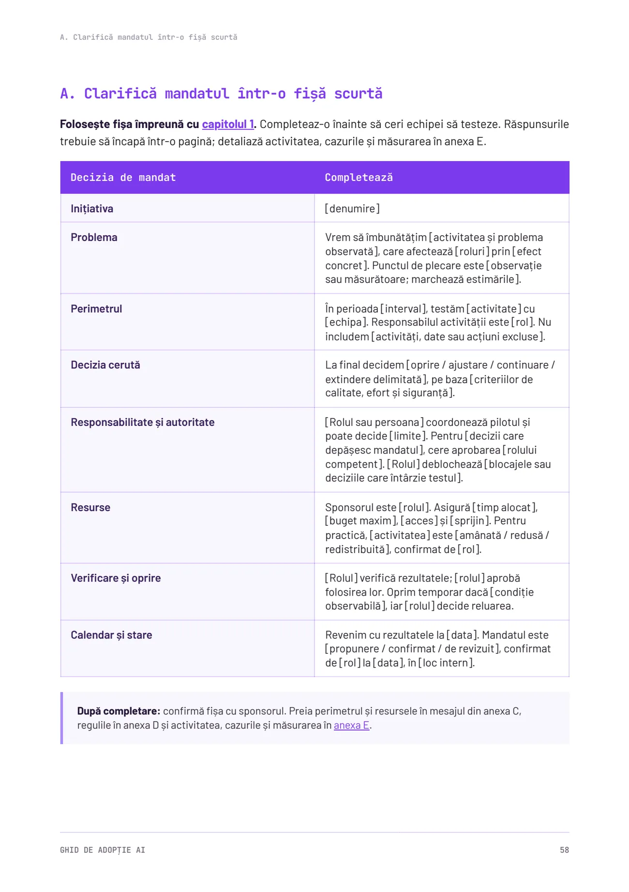
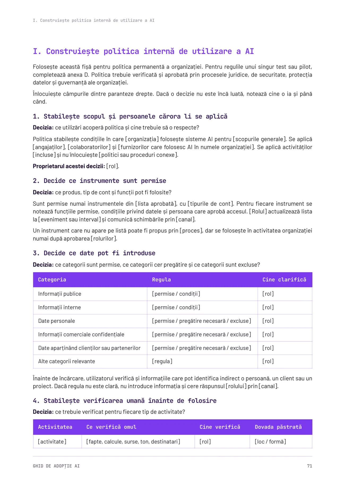
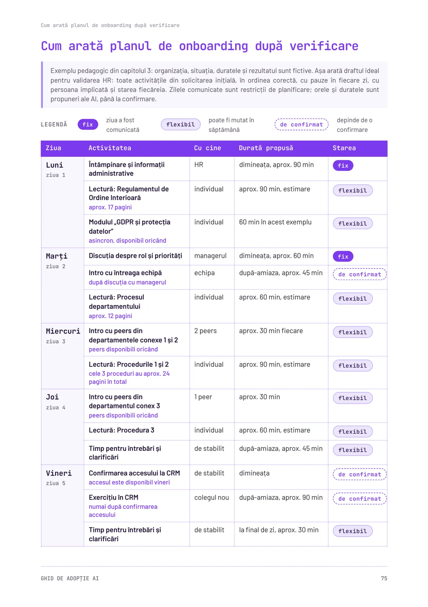
Ghid practic și gratuit pentru primele 90 de zile de adopție AI în organizație. 77 de pagini, 10 capitole, 9 fișe de lucru.
- Traseul în 3 etape: mandatul și regulile, primul pilot, raportul către conducere
- Un exemplu practic urmărit prin tot ghidul: planul de onboarding pentru un coleg nou, pregătit cu AI
- Ancorat în legislația națională și europeană în vigoare în septembrie 2026
Patru viitoruri ale muncii în România 2030
Primul raport de foresight dedicat viitorului muncii în România. Patru scenarii construite pe date reale, din care rezultă 10 competențe relevante pentru toate viitorurile posibile. Util pentru lideri care vor să planifice dincolo de trimestrul următor.
- Patru scenarii pentru 2030, construite pe Natural Foresight® Framework și ancorate în date de la Eurostat, INS și WEF
- Zece competențe validate cross-scenariu, fiecare cu un prim pas concret
- Implicații și strategii per scenariu, cu focus pe IMM-uri
Cum lucrez
Assessment pre-laborator
Participanții completează un diagnostic înainte de sesiune. Datele arată nivelul echipei, barierele de adopție și procesele cu potențial de automatizare. Datele sunt utilizate în etapele 2 și 3.
Raport de diagnostic
Managerul echipei primește un raport agregat înainte de laborator: care este nivelul echipei, care sunt constrângerile, unde apar blocajele și ce ar fi util să se întâmple în sesiune.
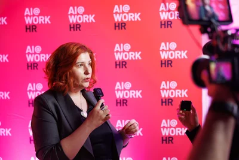
Laborator personalizat pe date reale
Sesiunea e construită pe baza răspunsurilor echipei. Fiecare echipă primește exact ce are nevoie. În spatele fiecărui laborator stau instrumente proprii testate în 1.000+ ore de lucru cu peste 5.500 de profesioniști.
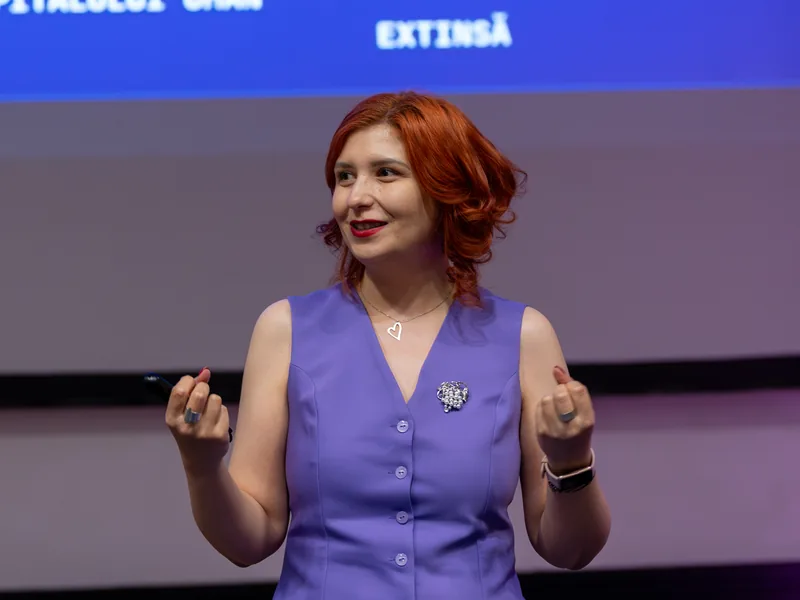
Follow-up la 20 de zile
Sesiune de 2 ore în care vedem ce funcționează, ce nu funcționează și ce ajustări mai sunt necesare. Disponibil și ca program extins pe 3 luni pentru organizații care vor să scaleze AI Business Translators interni.
Produse și servicii
Toate pornesc de la aceeași competență: agency-ul cu care judeci obiectivele relevante contextului tău, știi ce și cum să delegi spre AI și acționezi pe baza deciziilor luate pentru îndeplinirea obiectivelor.
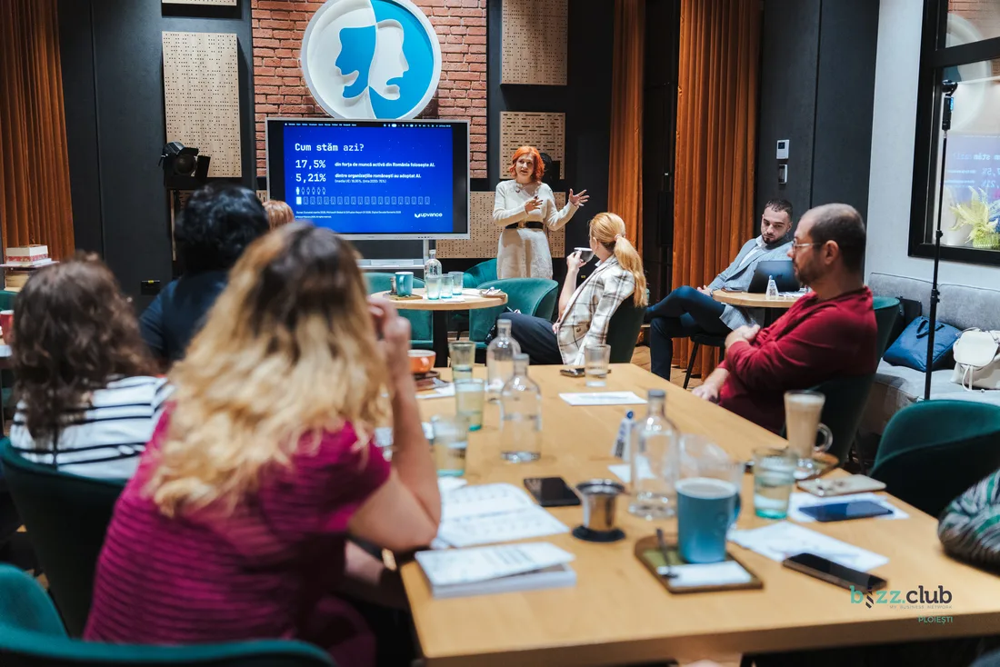
Pentru leadershipAI Agency for Leaders
Discernământ și capacitate de acțiune cu AI pentru lideri.
Înțelegi extrem de clar ce ai nevoie pentru a lua deciziile corecte legate de implementarea AI în organizația ta: de unde începi, ce prioritizezi, ce eviți și cum conduci oamenii prin schimbare. Pleci cu direcție, priorități și cu un plan de acțiune.
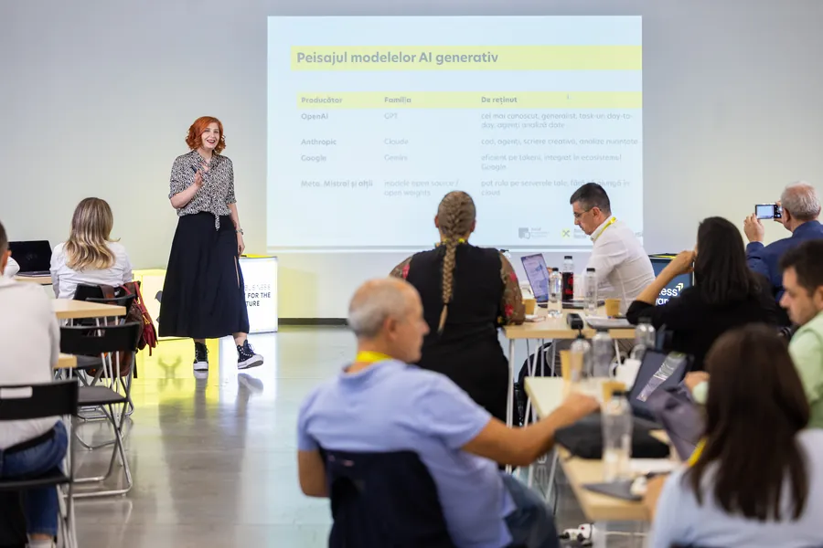
Cel mai popularAI Agency for Teams
Echipa ta rezolvă sarcini reale cu AI, cu agency (= discernământ + acțiune).
Laboratoare de lucru 100% customizate pe industria, rolurile și workflow-urile reale ale echipei: facem o analiză de nevoi și construim o selecție de use-case-uri pe nevoile unice ale participanților, ca ei să plece la final cu sarcini reale rezolvate și cu dorința de a explora cum se pot rezolva și altele.
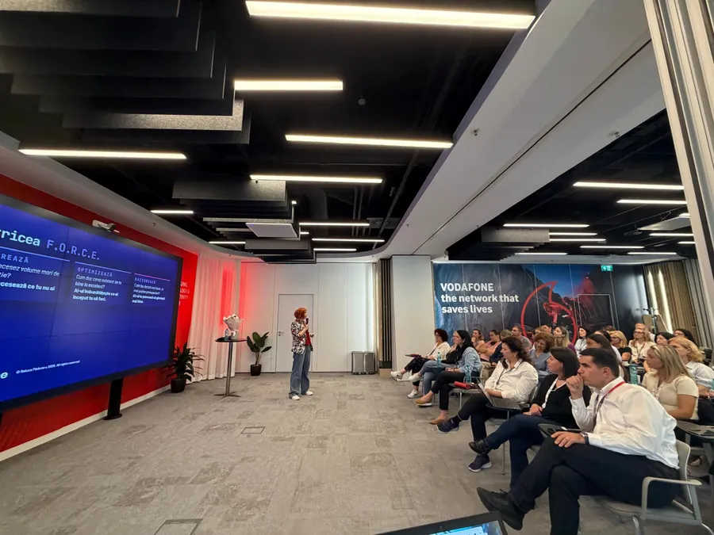
Gândire anticipativăFutures of Work Lab
Prin foresight explorezi scenarii de viitor ca să poți calibra corect deciziile pe care le iei azi.
Formulezi strategii prin care să te pregătești azi pentru viitorul în care ai putea ajunge mâine și explorezi cum va arăta viitorul rolurilor din organizația ta, cum se transformă modelul vostru de business sau cum va arăta industria voastră.
Fiecare produs începe de la cum va arăta industria ta în 3 ani și ce trebuie să faci azi ca să fii pregătit. Toate sunt configurate pentru contextul, industria și dimensiunea echipei tale. Hai să vorbim despre ce ar fi potrivit pentru tine.
Hai să vorbimVrei să îți construiești sistemul de lucru cu AI în sesiuni de lucru 1:1? Este un program de 3 sesiuni online și sunt doar 5 locuri disponibile în toamna asta.
Află despre mentoratul individualKeynote-uri
Descoperă temele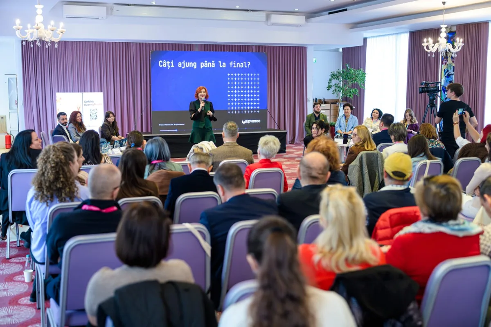
Pentru conferințe și evenimenteCum să fii bun la ceea ce faci în era AI
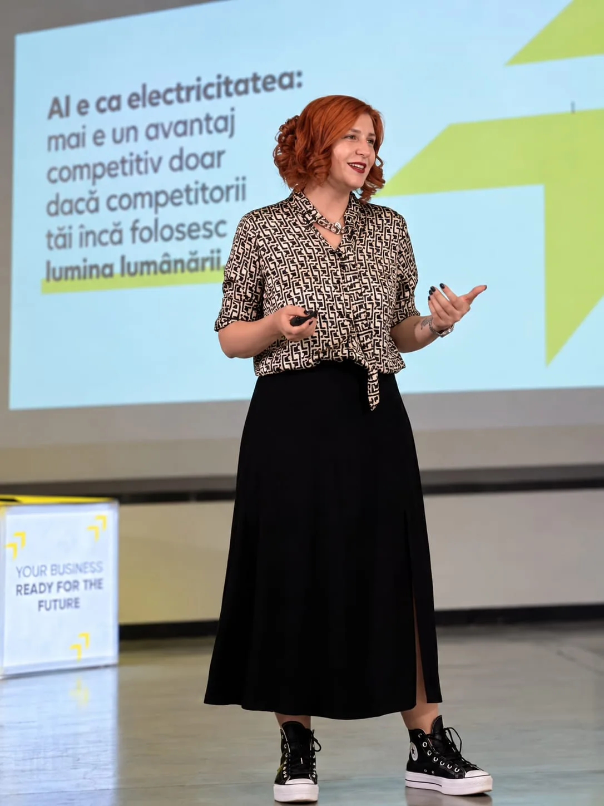
Cum conduci adopția AI în organizația ta
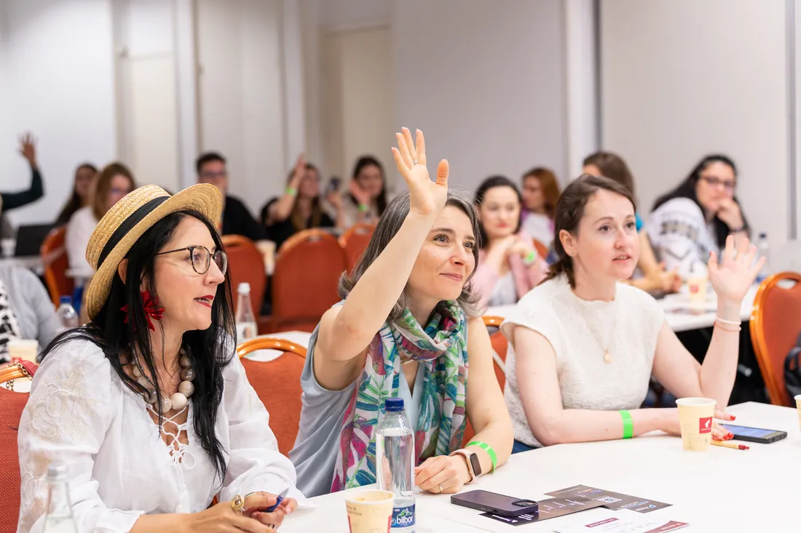
Viitorul muncii e deja în lucru
Ce spun participanții
I built something I'll be using every single day: my own Cortex — a personalized AI system designed around the way I work, think, and make decisions. […] this workshop wasn't just an interesting learning experience, it has already changed the way I work.
Sunt cursuri din care pleci cu notițe, și sunt cursuri din care pleci cu ceva care deja lucrează pentru tine.
De la nevoia de a folosi AI mai bine am ajuns să-l folosesc pentru a gândi, analiza, verifica și structura un proiect extrem de complex, pentru care mă pregăteam psihic și emoțional de aproximativ 1 an. Faptul că am reușit să duc la capăt acest proiect (fără a avea expertiză în Comp&Ben) și să construiesc instrumentele de care aveam nevoie este pentru mine aur curat.
Combo: science & magic
Am intrat cu «Eu nu sunt o persoană tehnică!», «Vreau să-mi eficientizez procesul de recrutare!», «Vreau să-mi planific mai bine banii și timpul!» și am ieșit cu un board pe care l-am pus să ia decizii, cu un plan pe final de 2026 și pe 2027, cu câțiva angajați AI foarte productivi.
I left with the beginnings of my own AI TEAM! Different roles. Different responsibilities. Clear expectations. Skills and job descriptions. Even interviews before deciding whether an AI «employee» gets the job.
Am avut o experiență de o zi în care să construiesc live, cu Claude, un al doilea creier: un sistem care mă cunoaște, lucrează pentru mine și produce.
Singură am rezolvat situația aplicației în versiunea desktop, cât și activarea opțiunii cowork, făcând pe programatoarea la indicațiile lui Claude. Îl iubesc maxim pentru că îmi dă puteri nebănuite.
3 hours, 16 real case studies and a framework that completely shifts how you think about AI. That's what a meaningful masterclass looks like.
Probabil unul dintre cele mai bune workshop-uri la care am participat în ultima vreme. Multe aha-uri și insight-uri reale, aplicabile. Un facilitator fluid și carismatic.
Raluca Păduraru's AI Fluency Briefing wasn't about hype. It wasn't about tools. It was about clarity, and that's exactly what the AI conversation has been missing. The F.O.R.C.E. framework changes how you look at every process in your workflow.
O super sesiune. Mi-a adus multă claritate și inspirație.
Un workshop excelent, scurt și la obiect! Raluca prezintă informația clar, concis și cu un entuziasm molipsitor. Mi-a plăcut mult abordarea practică, am fost aruncați în apă și a trebuit să înotăm, dar sub o ghidare foarte plăcută. A fost un laborator sigur de practică unde am învățat ecuația care ne influențează comportamentul și mediul de lucru.
Mi-a plăcut, foarte bine structurat, a fost interactiv și m-a ținut conectată. Nu a intervenit plictiseala. Nu mă așteptam să îmi schimb radical părerea despre AI, în sensul că am depășit frica.
Eu folosesc aproape zilnic AI și am apreciat faptul că a fost un curs bine structurat, practic, pentru niveluri diferite și am lucrat pe grupuri. Mi-a plăcut, foarte bine structurat, a fost interactiv și m-a ținut conectată. Nu a intervenit plictiseala.
M-a surprins faptul că pot folosi AI nu doar pentru sarcini administrative ci și pentru a fi mai organizată și creativă, și de asemenea cât de simplu este să formulezi cereri clare și cât de mult influențează rezultatele în modul în care pui întrebarea.
Am întâlnit-o pe Raluca, un om super tare. Fără vrăjeli de corporație, cu storytelling, exemple autentice și mai ales invitații înspre acțiune, înspre concret! Sesiuni cu adevărat transformatoare.
A fost foaare tare!! A fost ff interesant ziua de astăzi, a meritat pentru că am înțeles că AI nu te controlează, ci tu îl controlezi pe el.
A fost un curs plin de informații noi și dacă crezi că AI-ul este ceva simplu, să fie pregătit să descopere o groaîă de lucruri noi.
Raluca are o energie incredibilă și un mod de a structura informația care face totul foarte ușor de urmărit. Ceea ce am apreciat cel mai mult a fost felul în care a creat un spațiu sigur de experimentare. Exercițiile au fost alese perfect, oglindind situațiile cu care ne confruntăm zilnic.
Totul a fost excelent, de la conținut până la speaker. Raluca este un facilitator foarte bun, iar jocurile și exercițiile de echipă au fost exact practica de care aveam nevoie. Am plecat cu insight-uri valoroase despre cum putem învăța mereu să ne comportăm mai bine în mediul profesional. Recomand cu drag!
În cifre
Credențiale și certificări
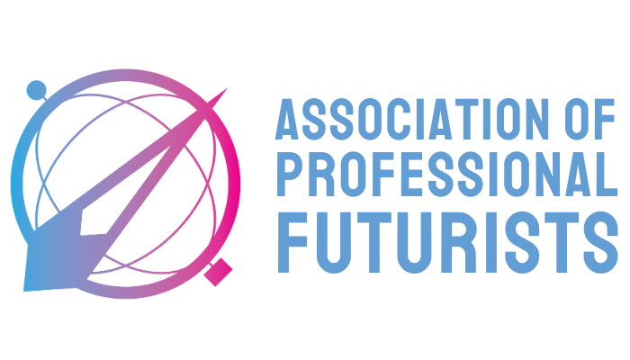
Association of Professional Futurists Certified Agile Leadership
Certified Agile Leadership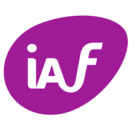
VP of AI & Digital @International Association of Facilitators, RomaniaApariții în presă
Raluca în acțiune
Framework-uri și resurse
Instrumente gratuite pentru lideri și echipe care navighează tranziția AI. Descoperă toate framework-urile pe pagina dedicată.
AI Business Translator Framework
Descoperă framework-ulCompetența care leagă realitatea organizației de capabilitățile AI: trei seturi de abilități, cinci activități și cinci milestone-uri de dezvoltare.
EU AI Act Compliance Checklist
Descarcă checklist-ulUn checklist de conformitate la EU AI Act pentru deployers. Te ajută să identifici ce sisteme AI folosești, cum le clasifici și ce obligații ai ca utilizator (deployer) conform Regulamentului UE 2024/1689.
C.A.D.R.U. Framework
Descoperă framework-ulCele 5 lucruri pe care numai tu le poți defini înainte să deschizi conversația cu un model AI de frontieră: Context, Alegere, Definiția reușitei, Restricții, Ultimul cuvânt.
Stratul uman
Descoperă framework-ulCe cultivi în tine și în echipă ca să rămâi valoros pe măsură ce AI-ul preia execuția: experiență acumulată, judecată și problem framing, relațional și etic.
Rămâi la curent cu AI și viitorul muncii
Abonează-te gratuitPerspective bi-lunare, framework-uri și opinii oneste. Fără spam, doar idei pe care le-am testat personal.
Prin abonare ești de acord să primești newsletter-ul The Leadership Catalyst cu noutăți despre AI și viitorurile muncii.